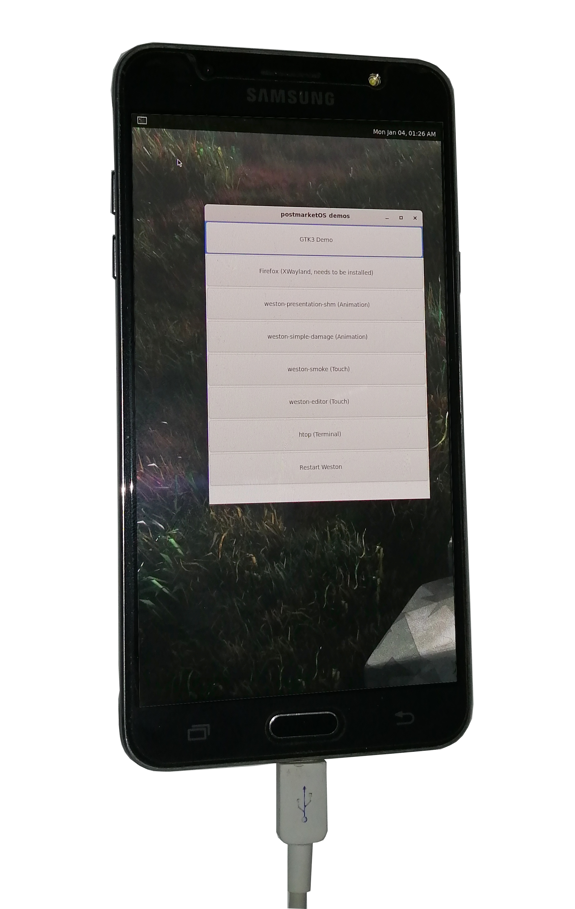

Samsung Galaxy J7 (2016)
Jump to navigation
Jump to search
|  | |
| Manufacturer | Samsung |
|---|---|
| Name | Galaxy J7 (2016) |
| Codename | samsung-jxelte |
| Released | 2016 |
| Category | testing |
| Original software | Android 6.0.1 (Marshmallow), upgradable to Android 8.1 (Oreo) |
| postmarketOS kernel | 3.18.14 |
| Hardware | |
| Chipset | Exynos 7870 |
| CPU | 1.6GHz Octa-Core (Cortex-A53) |
| GPU | Mali-T830 MP1 |
| Display | 720 x 1280 Super AMOLED |
| Storage | 16 GB |
| Memory | 2 GB |
| Architecture | aarch64 |
{kind=link}
| USB Networking |
Works
|
|---|---|
| Flashing |
Broken
|
| Touchscreen |
Works
|
| Display |
Works
|
| WiFi |
Works
|
| FDE | |
| Mainline | |
| Battery | |
| 3D Acceleration | |
| Audio | |
| Bluetooth | |
| Camera | |
| GPS | |
| Mobile data | |
| SMS | |
| Calls | |
| USB OTG | |
| NFC | |
| Accelerometer | |
|---|---|
| Magnetometer | |
| Ambient Light | |
| Proximity | |
| Hall Effect | |
| Ir TX | |
|---|---|
| TrustZone | |
Contributors
- Error1001
Users owning this device
How to enter flash mode
Hold down the home button + the power button + the volume down button from a power off state to get into Odin mode.
| Flashing with heimdall gets stuck, so i had to use adb sideloading to get postmarketos flashed. |
msm-fb-refresher, which despite its name is not exclusive to msm SoCs, is required if you didn't choose weston as your ui, so to add it do pmbootstrap init and press enter until you get to additional packages, add msm-fb-refresher there. |
Installation
Follow the installation guide, but install with:
pmbootstrap install --android-recovery-zip
and flash with:
pmbootstrap flasher --method=adb sideload
while in adb sideload mode.
See also
- pmaports!1853 Initial merge request
- Device package
- Kernel package
- Firmware package